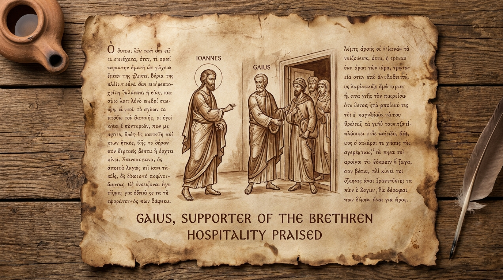

Hospitalidade e Cooperação no Reino
A Terceira Carta de João é o livro mais curto de todo o Novo Testamento. Diferente da segunda carta, que focava em advertências contra falsos mestres, esta é uma carta profundamente pessoal e positiva, dirigida a um homem chamado Gaio. João o elogia por sua fidelidade e, especialmente, por sua hospitalidade generosa para com os missionários itinerantes que pregavam o evangelho. O texto também contrasta o caráter exemplar de Gaio com a postura arrogante e autoritária de um líder chamado Diótrefes, que se recusava a colaborar com a obra e a receber os irmãos. É um lembrete prático sobre o valor do apoio mútuo na missão cristã.
Ficha Técnica
- Autor: O apóstolo João.
- Tema Principal: A importância da hospitalidade cristã, o apoio aos obreiros do Reino e a condenação do orgulho na liderança.
- Versículo-Chave: "Amado, não imite o que é mau, mas o que é bom. Aquele que faz o bem é de Deus; aquele que faz o mal não viu a Deus." (3 João 1:11)
Estrutura
- Saudação a Gaio e o elogio à sua fidelidade e hospitalidade (Versículos 1-8)
- O contraste: A oposição de Diótrefes e o bom testemunho de Demétrio (Versículos 9-12)
- Conclusão, votos de paz e planos de uma visita pessoal (Versículos 13-15)